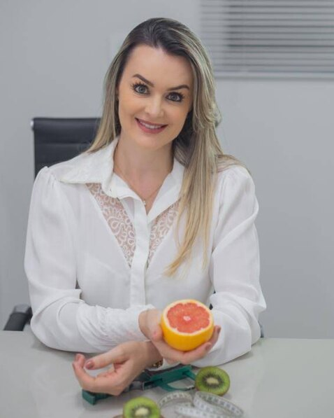
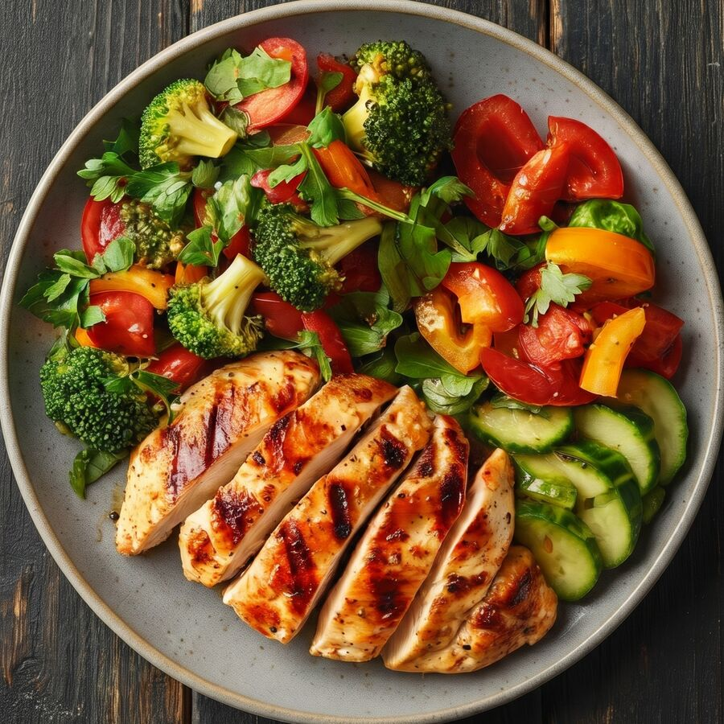
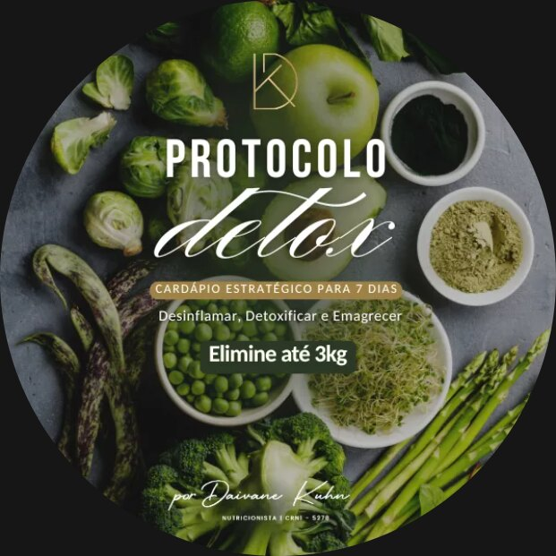
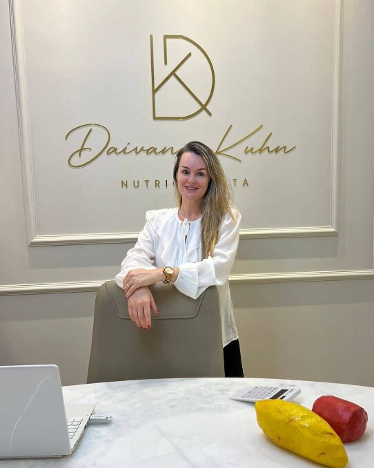

Emagrecimento saudável
Para quem busca reduzir peso com orientação, equilíbrio e estratégias sustentáveis.
Nutricionista e Farmacêutica · CRN-1 5278
Nutrição estratégica e acompanhamento individualizado para conquistar resultados reais, respeitando seu corpo, suas necessidades e seu estilo de vida.
Atendimento presencial em Primavera do Leste e online.

Uma alimentação saudável precisa fazer sentido na sua vida. Meu trabalho é ajudar você a construir hábitos que se mantêm, sem soluções temporárias.

Método de trabalho
Não existe uma fórmula única para alcançar bons resultados. O acompanhamento nutricional é pensado de acordo com seus objetivos, suas necessidades, suas preferências alimentares e sua realidade.
A proposta é construir uma alimentação possível de manter, com orientações práticas e estratégias que acompanhem sua evolução.
Um planejamento alimentar que considera suas necessidades e seus objetivos, sem ignorar sua rotina.
Mais consciência nas escolhas, autonomia e uma relação mais equilibrada com a alimentação.
Orientação durante o processo para avaliar sua evolução e realizar os ajustes necessários.
Para quem é o acompanhamento
Para quem busca reduzir peso com orientação, equilíbrio e estratégias sustentáveis.
Para quem deseja melhorar hábitos e ter mais consciência sobre a alimentação.
Para quem deseja cuidar da saúde e ter uma rotina alimentar mais equilibrada.
Para quem precisa de direcionamento e acompanhamento para manter a constância.
Desafio 21 Dias com a Nutri
21 dias para desinchar, desinflamar e destravar, com acompanhamento profissional e orientação diária sobre suas escolhas alimentares.
Além das consultas, o desafio é uma oportunidade de fortalecer hábitos, compartilhar experiências e manter a motivação ao lado de outras mulheres com o mesmo objetivo.
Escolha como participar
Todas as estratégias do método e acompanhamento em grupo, de onde você estiver.
As mesmas estratégias e o acompanhamento em grupo, com duas avaliações de bioimpedância InBody no consultório.

E-book · Protocolo Detox
Um plano prático de 7 dias, criado pela Daivane, com estratégias de nutrição funcional e receitas para quem quer desinchar e dar o primeiro passo em direção a uma rotina mais leve.
Compra segura pela Hotmart.

Sobre a profissional
Sou nutricionista e farmacêutica, e acredito que a alimentação deve ser uma aliada na construção de uma vida mais saudável.
Meu propósito é ajudar pessoas a desenvolverem uma relação mais equilibrada com a comida, respeitando suas individualidades e objetivos.
Acredito em uma nutrição estratégica, com orientação profissional, acolhimento e escolhas que façam sentido na vida real.
Cada pessoa tem sua história, sua rotina e seus desafios. Por isso, o cuidado precisa ser individualizado.
Avaliações
O grupo de acompanhamento ajuda a manter o foco e a motivação.
Hoje, além do resultado, tenho controle sobre minha alimentação.
Profissional super competente, atualizada e atendimento super humanizado!!
+1.300 mulheres já passaram pelo Desafio 21 Dias.
Já é paciente? Deixe sua avaliação no GoogleOs atendimentos são realizados presencialmente em Primavera do Leste (MT) e também no formato online.
O acompanhamento é individualizado, considerando seus objetivos, necessidades e rotina. As orientações são adaptadas de acordo com sua evolução.
Não. A proposta é desenvolver uma alimentação equilibrada e adequada à sua realidade, sem restrições desnecessárias.
Entre em contato pelo WhatsApp para consultar as datas da próxima edição, os valores e as vagas disponíveis. Há duas formas de participar: Essencial (100% online) e Premium (com duas avaliações de bioimpedância presenciais e vagas limitadas).
A compra é feita pela Hotmart e o acesso ao e-book chega por e-mail logo após a confirmação do pagamento. Você pode ler no celular, computador ou tablet.
Basta clicar no botão do WhatsApp e conversar diretamente para verificar horários e condições de atendimento.
Você não precisa esperar o momento perfeito para começar a cuidar de si. Com orientação e acompanhamento, pequenas mudanças podem construir uma grande diferença ao longo do tempo.
Vamos conversar sobre seus objetivos?
Agendar minha consulta pelo WhatsApp